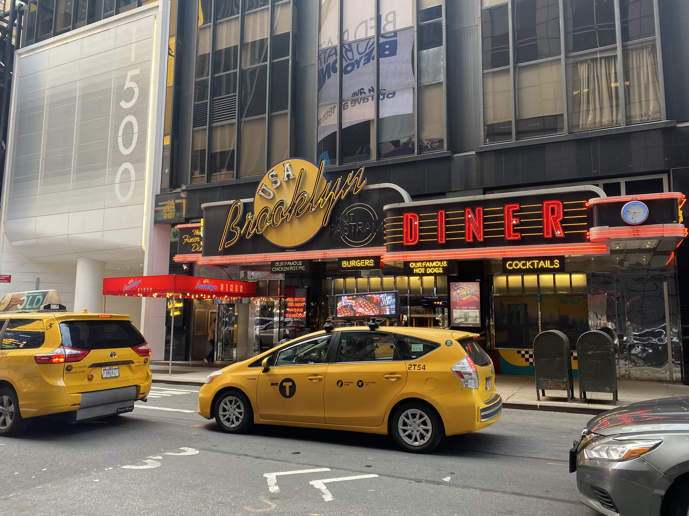
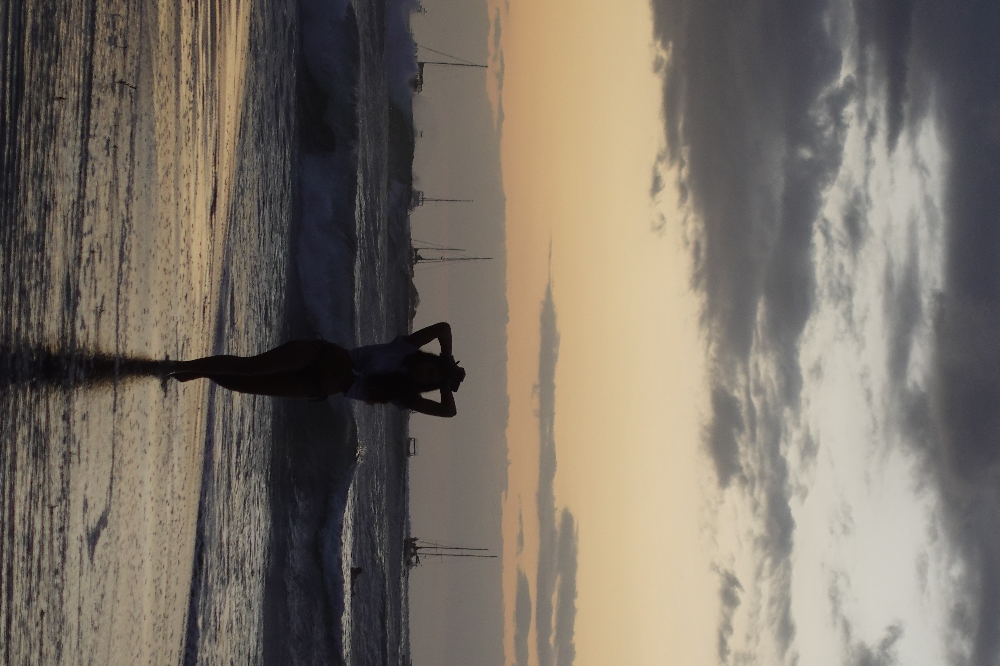
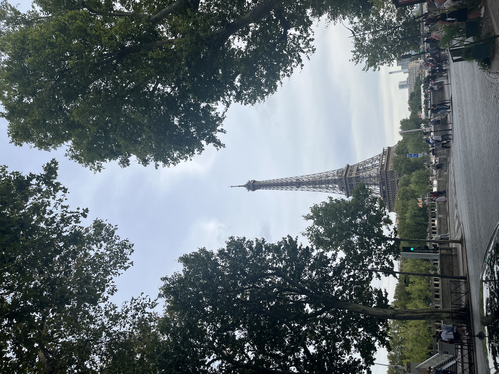
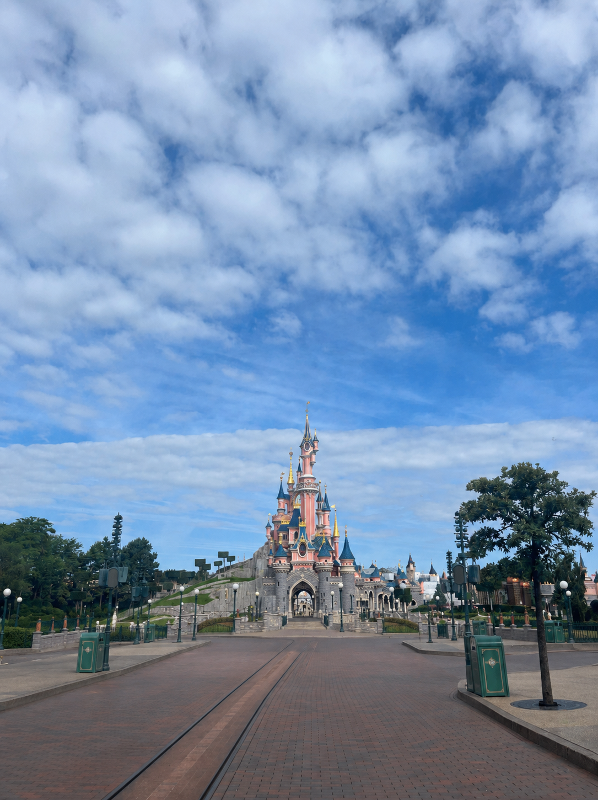
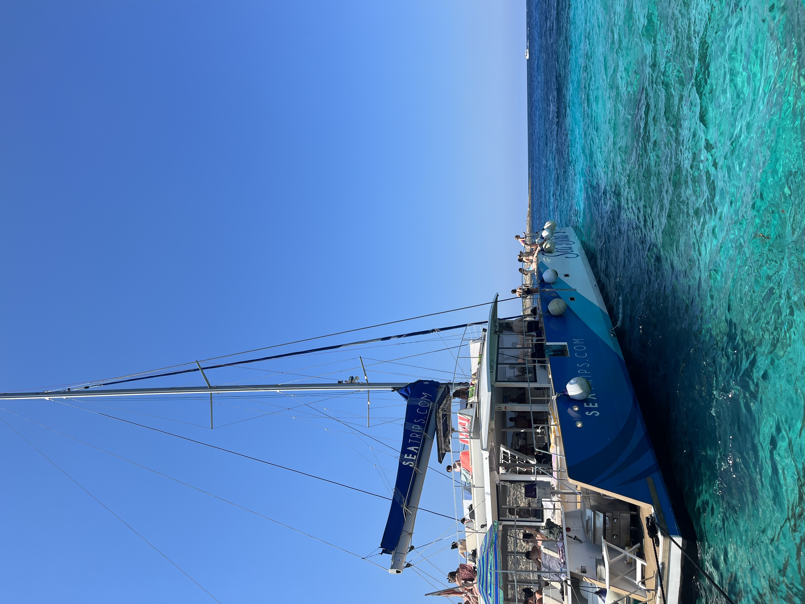
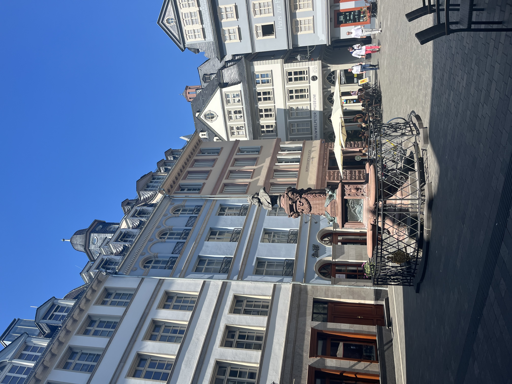
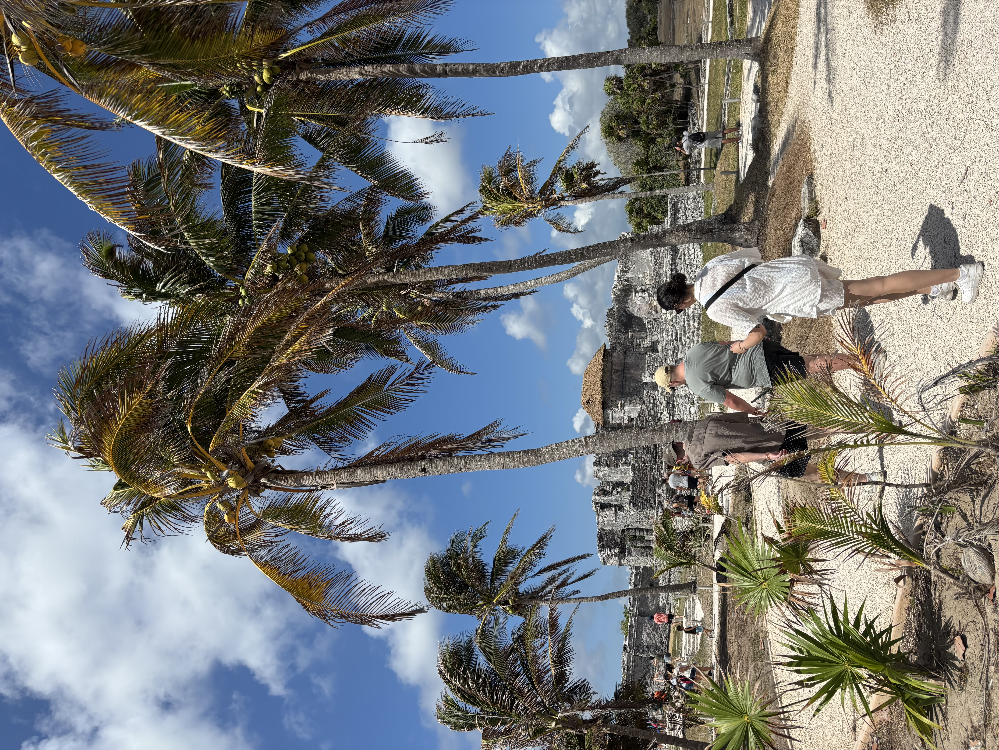
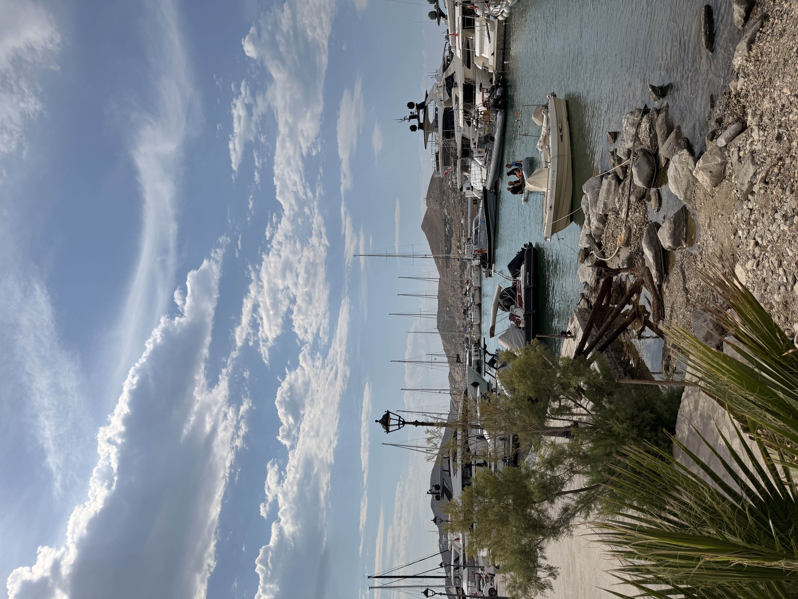

Sarah-Jade Lachance
Maîtrise en relations internationales
Université Laval
Maîtrise en relations internationales
Université Laval
Les voyages et l’apprentissage des langues occupent une place importante dans ma vie. Voici quelques expériences et souvenirs que je souhaite partager.
Janvier 2021 — juillet 2022
Le 6 janvier 2021, je suis partie aux États-Unis pour apprendre l’anglais et travailler comme jeune fille au pair. J’ai vécu au sein de deux familles.

Janvier à août 2021
Ma première famille vivait à Long Island, où je m’occupais de deux jeunes enfants.
Août 2021 à juillet 2022
J’ai ensuite rejoint une deuxième famille à Washington, où j’étais responsable de deux adolescentes.
Ce séjour d’un an et demi m’a permis de développer une très bonne maîtrise de l’anglais.
Janvier–février 2023 · Tamarindo
J’ai passé trois semaines à Tamarindo dans le cadre d’un programme d’espagnol avec EF Education. Ce séjour associait l’apprentissage de la langue à la découverte du Costa Rica.

Deux séjours · 2023 et 2026

J’ai voyagé seule en France, où j’ai notamment visité le château de Versailles, le musée du Louvre et Disneyland Paris.

Je suis retournée en France pour rendre visite à la famille de mon conjoint.
Août 2023
Après mon voyage en France, j’ai poursuivi mon séjour à Malte.

Août 2023 · Francfort
Après mon séjour à Malte, je suis allée à Francfort rendre visite à une bonne amie rencontrée pendant mon séjour aux États-Unis.

Mai 2025 · Tulum
En mai 2025, je suis partie au Mexique avec un groupe d’amis. Nous avons séjourné à Tulum.

Mai 2026 · Mykonos, Paros et Santorin
Après mon deuxième séjour en France, j’ai poursuivi le voyage en Grèce. Nous avons visité trois îles : Mykonos, Paros et Santorin.

En cours
École supérieure d’études internationales
Université Laval
Je suis actuellement à l’étape des cours.
Diplôme obtenu au printemps 2026
Université Laval
Langues étudiées : espagnol et russe.
Hiver et été 2026
Introduction à la carte du monde — GGR-1000
Université Laval
Très bonne maîtrise
Développée notamment pendant mon séjour d’un an et demi aux États-Unis.
Avancé
Langue étudiée au baccalauréat et lors d’un séjour linguistique au Costa Rica.
Débutant
Langue étudiée dans le cadre de mon baccalauréat.
Apprentissage en cours
Je poursuis actuellement mon apprentissage.
Pour toute question ou pour échanger avec moi, vous pouvez m’écrire par courriel.
Adresse : sjlac2@ulaval.ca